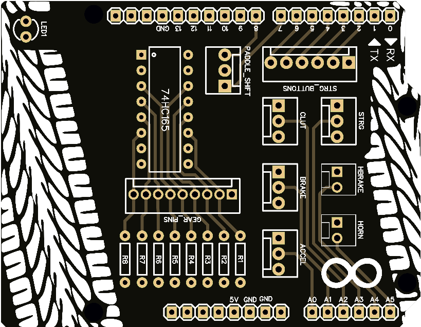

Steering Wheel UNO
Shield para Arduino UNO
Este shield foi desenvolvido para utilização em joysticks de simulação, utilizando o CI 74HC165 (registrador de deslocamento com saída serial) destinado a aumentar o número de portas do Arduino UNO. O shield conta com 4 saídas analógicas, destinadas ao volante, acelerador, freio e embreagem, além de saídas digitais para os botões direcionais, home, freio de mão, buzina, paddle shift (cambio borboleta) e câmbio manual. O dispositivo foi criado tendo como base a biblioteca UnoJoy, estando limitado aos inputs suportados por esta biblioteca.
Componentes
Componentes necessários para a montagem.

O shield tem 53mm x 69mm de dimensões, cobrindo todo o Arduino UNO. Em virtude disto, o dispositivo dispõe de um LED de 5mm ligado ao pino 13, onde serve de extensão do LED interno do Arduino, facilitando a visualização de sinais de aviso emitidos. O LED é um componente opcional.
Este projeto possui 4 layers.
Versão: 1.2
Conexões
Conexões presentes na PCB.

-
Entrada analógica do volante:
STRG
-
Entrada analogica da embreagem:
CLUT
-
Entrada analógica do freio:
BRAKE
-
Entrada analógica do acelerador:
ACCEL
-
Entrada digital do freio de mão:
HBRAKE
-
Entrada digital da buzina:
HORN
-
Entradas digitais direcionais:
STRG_BUTTONS
-
Entradas digitais câmbio manual:
GEAR_PINS
-
Entradas digitais cambio borboleta:
PADDLE_SHIFT